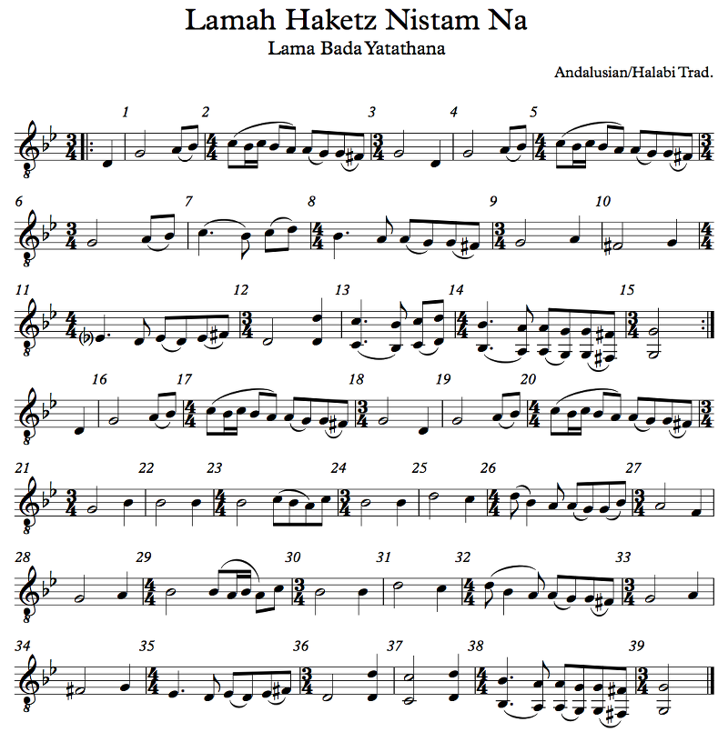

OFFTONIC THEORY
Chapter 1: The Basics
Overview
Let's start from the very beginning.
A very good place to start!
When you read, you begin with?
A, B, C!
Uh. Do you really, though? I mean, what does that actually get you, the letters A, B, and C? You can't actually say anything interesting with those letters. You don't understand anything from those letters. I don't know how English speakers learn to read, to be honest, but when my kindergarten class in Brazil learned to read, we learned about a farm where all the letters lived, and we started out with the vowels. Each vowel makes a sound. (In Portuguese, this makes sense. In English... not so much.) Later on, we learned about a few of the consonants at a time, and we learned words that used them, until, a few weeks later, we had the entire alphabet covered and could in theory pronounce any word we saw (again, Portuguese has predictable pronunciation, for the most part, while English does not).
In any case, we're going to start not with "do, re, mi" (which is actually a fairly good starting point, to be honest) but with some sheet music. We'll get to "do, re, mi" later.
Whoa, bro, hold up! I have to learn how to read sheet music? I don't read, yo.
Yep. We've gone over this already. It's actually really easy. Don't worry, I'll explain everything.
To start, here's the alphabet song! (I recorded it myself, so it sucks. Sorry.)
Example 1.1
What the total fuck?
I learned the alphabet in Portuguese. That's how my mom taught me the song. Blame her if you don't like it. So... yep. Let's go through it bit by bit, shall we?
This is a staff:

Example 1.2
It has five lines and four spaces. The staff is essentially a grid; each line and space corresponds to a note (well, there are always complications, but we'll get to them). Notes go on the staff and you can tell what the note is. So, for example, if you listen to my singing while looking at the music, you can see that the higher the note is on the staff, the higher the pitch of the note.
Here are some notes:

Example 1.3
Notes come in several different shapes meaning different things. The first two notes are called quarter notes; they have stems (that's the line coming out of the circle-looking part) that can point up or down. The direction of the stem is only to make things easier to read (but... we'll get to that). Quarter notes have filled in note heads (that's the circle-looking part). The third note, on the other hand, is a half note. Half notes are twice as long as quarter notes. Their note heads are not filled in.
Next comes an eighth note, two sixteenth notes, and another eighth note. Eighth notes have one line sticking out of the stem, while sixteenth notes have two. Eighth notes are obviously half the length of quarter notes, and sixteenth notes are half the length of eighth notes. When the line connects to another note, that line is called a beam; when it doesn't, it's called a flag. In that group of notes, the first three notes are beamed together, while the fourth has a flag. After it is an eighth rest, which is when you don't play (or sing) any note at all for the duration of an eighth note.
After the eighth rest there are two more eighth notes, beamed together, followed by a quarter rest. Finally, we have a whole note, which is twice the length of a half note. The whole note has a larger note head that is not filled in, and it has no stem.
We'll go into detail about these notes a bit later.
What are those lines above the last note there, the one you said is a whole note?
Ah, those are called ledger lines. The staff only has five lines and four spaces, so it only fits nine different notes. If you want to go higher or lower than the staff fits, you may have to add additional lines!
One more question, the first note is a C, right?
Hmmm. Not quite! See that symbol at the very beginning of Example 1.1? That's called a clef. That clef tells you what pitches the lines and spaces on the staff actually represent. We'll talk about those soon too.
There are a few more things in that picture. First, you'll see that below the notes there's some alien text. That's just the lyrics, which are in Portuguese. I will be showing you examples in many languages, but generally we write the lyrics below the notes. Notice how the rests don't have any lyrics?
Then, there are a bunch of vertical lines on the staff. Those are called bar lines, and the space between bar lines is called a bar or a measure (both terms are used interchangeably). You'll see that I numbered the measures. That's so that I can talk to you about what happens in bar 7 and you can look and see exactly what I mean. In real music, the measures may or may not be numbered for your convenience, but we'll get to that too, believe it or not.
But what does a measure actually mean?
Good question. It depends, I guess, but the most basic function of separating music into measures is so that you can follow it more easily. In the old days, when the popular sensation was Gregorian chant, they didn't have measures at all, like in Example 1.3.
But measures play especially well with time signatures. See that 4 on top of another 4 right at the top (the beginning of a piece of music is called the top) of Example 1.1? That's not a fraction, but we usually write it as one, 4/4. It's called the time signature. It means that every measure contains 4 beats, each of which is a quarter note. And, as you can see, measure 1 has four quarter notes! Measure 2 isn't so lucky, but the notes there add up to four quarter notes. Measure 4, though, has a different time signature: 3/4. That means that there are 3 beats in the measure, not 4. The top number is the number of beats in the measure, and the bottom number is which note counts as a beat.
Er... Uh. Aha... Nope. Sorry, I'm still a bit confused...
We'll talk much more about this a little bit later, don't worry.
Why is there a thick line at the very end?
That's called a final bar line. It just means that the piece or movement is over.
And what about the 3's above measure 7 and measure 8? Why do those measures not have the number of beats they say they do? Measure 7 is in 4/4, but there are 3 quarter notes and 3 eighth notes, which adds up to 4.5 quarter notes, right?
Aha, the 3 means that those notes are triplets! An eighth note is half of a quarter note, but an eighth note triplet is a third of a quarter note instead.
So now you know the basics of how to read music! Not so hard, right?
Well... I still have a lot of questions. Like, what notes are these anyway?
Oh. Right. OK, let's go deeper so that we can answer those questions.
Notes on the Keyboard
In order to learn about pitches on the staff, we're going to learn about the clavier — the keyboard.

Example 1.4
First, I want you to look at that red dot. That key, with the red dot, is called Middle C. By the way, this is a picture of my own shitty keyboard; I paid $600 for it in January 2008 at the music store. It was a refurbished model. I could probably have found something better for less money, but I needed a full 88-key keyboard with weighted keys. If you're learning music theory, you should probably get a keyboard too of some kind, but you probably don't need the full 88 weighted keys if you're not practicing piano music. You can probably get by with a much cheaper one.
Wait, so I need to go out and buy one of those?
It would be helpful, to be honest, even if it's a smaller model. For now, though, you can use the Offtonic Keyboard (if your browser supports it, anyway, and you'll also want to set your keyboard layout to QWERTY):
Huh, that's really cool. It's so well-done. I can appreciate good work when I see it. It's expertly coded and even looks wonderful. Seriously, great job on this keyboard.
Why, thank you for the kind words! I recommend keeping a separate tab or window with this keyboard open whenever you're reading this book so that you can sound through examples easily.
So how do I use this thing?
Click on it to turn it on, and click outside it (or switch to another window) to turn it off. The border will go from light gray to darker gray to let you know. Then, you can click the individual keys to play notes, or use your computer keyboard (if it's in a QWERTY layout) to play the note marked with that computer key. I put the name(s) of each note at the top, and I put a red dot on Middle C for you. There are two rows. Now, obviously the real piano keyboard doesn't have two rows, but this one does. The lower notes are on the bottom row.
A couple other notes about the Offtonic Keyboard: if you click on a note with your mouse button and drag the pointer off, the note will keep playing until you click on it again. This can be useful. Also, middle C is actually on here twice, at the bottom right and at the top left; it doesn't need to be here twice but I figured it looks better this way. Finally, if you're playing with your computer keyboard, you may notice that certain combinations of keys just don't work. Unfortunately, that's a fact of how your computer keyboard is wired. I think there exist computer keyboards without this limitation, but if you're going to buy one of those, you might as well buy a regular piano keyboard, right?
Why are some of the piano keys blank on the bottom?
Ran out of space on the computer keyboard. Sorry! It would have been nice to be able to play Bach's keyboard inventions on this, but unfortunately computer keyboards are only so big.
What about the weird stuff at the top?
All right. Well, this is a keyboard. This one in particular has 49 keys, not counting the doubled Middle C. Johann Sebastian Bach, around 1700, would have used something like this (but not broken into two rows, obviously, and also probably not one written in JavaScript). The keys on a keyboard are grouped in a pattern: see the bunches of black keys? Two black keys, then three, then two, then three, etc.? Now, find a bunch of two black keys. Any bunch. The white key just to the left is called C. The next white key is called D, in between the two black keys. The next white key, to the right of the two black keys, is E. To the left of the three black keys is F; in between the first and second of the three black keys is G; in between the second and third of the three black keys is A; to the right of the three black keys is B.
The 12 notes from C to B, including the 7 white notes C D E F G A B as well as the 5 black notes, form what's called an octave.
Octave... as in 8?
That's right! That's because the octave is actually the distance from C to the next C, but technically the next C is part of the next octave. There are 8 notes from C to C, if you count both endpoints (which is stupid, but musicians aren't known for being mathematically consistent). We'll get more into intervals later.
Really quickly now, see if you can look at the picture of my piano keyboard (the real one) and find an F, an A, an E, a B, a G, a D, and a C. It doesn't matter which F or which A or whatever; just see if you can find one of each so that you can get a feel for identifying notes on the piano.
What about those numbers? What's C4? Is that an explosive?
The numbers correspond to something called scientific pitch notation, and they just serve to tell you what octave on the piano the note is on. Octaves start at C, so B3 comes right before C4. The lowest C on the piano is C1 and the highest is C8. There are actually three notes lower than the C1, so those get an octave number of 0; the lowest note is A0. Lower than that, human hearing just doesn't really hear those vibrations as pitches (we'll talk more about this much later), but you can have C–53 or whatever; you just won't hear it as a note. Most of the time, though, there's no need to talk about specific octave numbers. I put them on the Offtonic Keyboard so that you can identify Middle C, which is C4 (the start of the fourth complete octave on the piano), but I won't generally be talking about octave numbers unless they're actually relevant.
There's actually another way people talk about octaves. Well, a couple of other ways. One is to use primes. So you have C, then going down in octaves, C', C'', C''', etc. Going up, you have C, then c, c', c'', c''', etc. c' is Middle C in this scheme, and it's called Helmholtz pitch notation. Another also uses uppercase and lowercase letters, but it repeats the letters instead of using primes, so going down you have C, CC, CCC, etc., and going up you have C, c, cc, ccc, etc. cc is Middle C in this scheme, and it's called English pitch notation. (We haven't talked about accidentals yet, but a low Bb in English notation would be BBb or BBBb; you repeat just the letter.)
Wait, accidentals? Also, what about the black keys?
I'm very glad you asked! First of all, don't be afraid of the black keys. I used to be when I was a little kid, because I had only learned the white ones! The black keys are just in between the white keys. We use a sharp (♯) to go up a note, and a flat (♭) to go down a note. These symbols are called accidentals for some reason.
I can't see those symbols. What?
...Sigh. Most fonts don't actually display them. It's stupid, but it's what it is. So in text, I will generally use # and b to refer to sharp and flat, respectively, instead of ♯ and ♭, which look similar. There hopefully won't be much occasion for confusion between a flat and an actual lowercase b. Note the differences, though: in a sharp sign, the vertical lines are actually vertical while the horizontal lines are tilted up; in the pound/number/mesh sign, the horizontal lines are actually horizontal while the vertical lines are tilted right. A flat sign is like a b but the bottom is pointy.
Anyway, go to the keyboard and find a G. (You remember where that is? Group of three black keys, white key between first and second black key.) The black key directly to the right of that is G#, and the black key directly to the left is Gb.
What if I find an F and go up a note? Won't that be an F#? You just said it would be a Gb!
That's right. F# is the same note as Gb. But they mean different things: it's like the words "here" and "hear". They sound the same, but they mean different things. We'll talk about what notes might mean, and how to tell if a note should be spelled one way or another, in a later chapter.
OK, so I found F#. What about Fb? There's no black key before F!
Interesting, interesting! Look at the very top of the row of notes on the keyboard. When you sharp a note, you just go to the next one, and when you flat a note, you go to the previous one. So for Fb, find an F, then go down a note, which is also E. Fb is the same note as E! E# is the same note as F. Db is the same note as C#. B# is the same note as C. There are different ways to spell notes, and if two notes are the same note but have different spellings, those notes are called enharmonic. F# and Gb are enharmonic, for example. A# and Bb are enharmonic. B and Cb are enharmonic.
Hey, Cb, um... How do octave numbers work with Cb?
Cb4 is the same note as B3. The octave number changes at C, regardless of any accidentals on it.
Are there any other accidentals?
There's the natural symbol (♮). This one restores a sharp or flat note (we'll explain more about this in a bit). I don't have an easy non-symbolic shorthand for it, so I usually write F♮ as "F-nat" or something like that, but most of the time it's not necessary. There's the double-sharp symbol (𝄪) and the double-flat symbol (𝄫), which I write as x and bb, respectively (so F-double-sharp is Fx and B-double-flat is Bbb); these symbols raise a note twice or lower it twice. So Fx would be F raised twice. Raise it once and you get F#; raise it again and you get Fx, which is enharmonic to G.
Why do we need to use these double accidentals?
It's tricky to explain right now, unfortunately, but once you experience the magic of key signatures you'll understand why they're useful.
There are also half-accidentals, which we'll explore eventually. Those don't represent notes on the keyboard at all; they represent the notes in between the ones on the keyboard. Unfortunately there are no convenient HTML entities for those (not in a style I like, anyway) so I'll show them to you inside sheet music.
Now, pull up the Offtonic Keyboard (or a real keyboard if you have one) and play the following (try to follow my punctuation as a clue for how long to play each note):
A3, A3 E4-E4, E4-B3, C4-B3 A3... E4 G4 A4, G4 E4 F#4 D4 E4... A4 A4, A4 G4, E4 E4 D4 C4 B3-A3-G3... A3, E4 D4, C4 B3 A3 G3 A3...
Recognize it? Can you try to play it down an octave (A2, A2 E3-E3, etc.)? You can try to play it up an octave too, but you'll find that the A5 isn't in the range of your computer keyboard (though you can still play it by clicking).
Now try this:
Bb3, Bb3 F4-F4, F4-C4, Db4-C4 Bb3... F4 Ab4 Bb4, Ab4 F4 G4 Eb4 F4... Bb4 Bb4, Bb4 Ab4, F4 F4 Eb4 Db4 C4-Bb3-Ab3... Bb3, F4 Eb4, Db4 C4 Bb3 Ab3 Bb3...
So, do you recognize that?
Huh, they're the same song, aren't they? An English folk song, Scarborough Fair? But I played them with different notes... How does that work?
Did you notice that the second one was a bit higher than the first one? If not, try playing the first phrase (up to the first ...) of the first version and then the same bit of the second version. You'll notice that the notes of the second version are just shifted up one note from the first version. This is called a transposition, when you shift every note up or down by the same amount from one version to another. Unless you have a particular superpower called perfect pitch, it doesn't make a big difference to you if you transpose an entire piece of music. It'll sound about the same, just higher or lower.
By the way, if you didn't try playing the notes I said earlier, you really should, because otherwise you won't get used to the keyboard and to finding notes on it. This is actually important.
So wait, why does the octave start at C? Why not A? Also, what happened to "do re mi"?
Ah, here's a quick explanation. Wikipedia has more. Basically, it's historical accident. These were just the notes they had available. The letters actually went A B C D E F G H I K L M N O (there was no J in the alphabet back then), and when people started noticing that two notes an octave apart sound pretty similar (we'll talk more about that later), they switched over to repeating the letters they already had. Starting on C instead of A is kind of arbitrary as well; it's just the way it turned out. By the way, the A-G system is mostly an Anglophone thing these days. The German world has a similar system, but B actually refers to Bb and H is B natural.
...Huh?
You heard me! The notes in German go C D E F G A H, with B being the name of Hb (enharmonic to A#). The Wikipedia link has more on that.
Much of the rest of Europe, however, uses the familiar "do re mi" of The Sound of Music fame, and that's how I learned notes as a wee lad in Brazil. The syllables "ut", "re", "mi", "fa", "sol", and "la" are the initial syllables of the lines of a Gregorian chant melody called "Ut queant laxis" that actually start on those notes; "ut" was changed to "do" in some places, and the concluding line "Sancte Iohannes" became "si", the seventh note name. Some places changed "si" to "ti" so that each note starts with a different letter. I learned it as "si".
Still other systems have other names for notes. Arabic, Turkish, and Indian have their own note systems with their own names; for example, "siga" is the Arabic name for Ed4. That's E half-flat above Middle C.
Did you say "half-flat"?
...
You know what, never mind. What should I know at this point?
I'll summarize: you should be able to find Middle C on a keyboard (without the red dots). You should also be able to find any note on the keyboard, including sharps and flats, by finding groups of black keys and figuring out which white notes are which, then moving up or down if there are accidentals. You should actually be able to do this well, so practice on your own if you're still not quite there. Indeed, you should see if you can figure out any other songs by playing around. Can you figure out Twinkle Twinkle Little Star? Yankee Doodle? Middle C is often a good note to start on (but it's not always the best). Try to start on other notes for practice, though. Just be careful about going outside the range of the keyboard!
If you want to learn music theory, the best thing you can do is figure out how to play some melodies by ear. The best. Now that you have an instrument, even if it's just my virtual keyboard, you should be able to do that!
Pitch Notation
This is how you write notes on the staff!

Example 1.5
First, notice that symbol on the first line, on the left. That's called a bass clef ("clef" means "key" in French, but don't mind this because a "key" is something completely different). We use the bass clef to represent lower notes ("bass" means "low"): as you can see, all of the notes on it are below Middle C. In the middle of that first line, there's a different symbol. That one's called a treble clef ("treble"... does not actually mean "high"). That's the standard clef for music, as much as one exists; the notes on it are all above Middle C. See the next two staff lines? They're linked with a brace on the left side; the top staff has a treble clef and the bottom staff has a bass clef. Multiple staves (plural of staff) linked like this are called a system, and this specific system, a treble clef on the top staff and a bass clef on the bottom staff, is known as a grand staff. Piano music is generally written using a grand staff, with the upper staff representing the right hand and the lower staff representing the left hand. (Of course, the clef can change at any time; sometimes there are even three staves for a single player to read, but don't ask me how they manage!)
There are other clefs too, which we'll talk about shortly. For now, though, let's learn the notes on each staff. The bass clef looks kind of like a big apostrophe with a little colon, right? Well, it's supposed to look like an F. The apostrophe thingy is the vertical line of the F, and the two dots are the arms of the F. This clef is called an F clef, and the line that the dots go around is an F — specifically, F below middle C, F3. This clef is used by low instruments and bass singers, mostly. The notes on the lines of the bass staff are G, B, D, F, and A, and the notes on the spaces are A, C, E, and G. There are mnemonics for this stuff. The lines can be "Girls and Boys Do Fine Always" and the spaces can be "All Cows Eat Grass". However you want to remember these is fine.
The treble clef looks like a big cursive S, right? Nope. Supposed to be a fancy G. Whatever. The center of that G, on the second line, is — you guessed it — a G, in this case, the G above middle C, G4. Most music you see is written in treble clef, and most people (who don't play bass clef instruments) are better at reading treble clef. Even some people who might otherwise read bass clef actually read treble clef instead (we'll talk about this shortly too). You should get very familiar with this clef since we'll be using it a lot. The notes on the lines are E, G, B, D, and F (mnemonic: Every Girl and Boy Does Fine — you should probably make your own because these suck), and the notes on the spaces are F, A, C, and E (mnemonic: your FACE).
On the grand staff I show you a lot more notes. The piano goes down to A0 and goes up to C8, so there are plenty of notes not shown that use even more ledger lines (those are the little lines above or below the staff), but they get really hard to count, so there are ways around it. Any staff can go as low or high as you want; the question is just how practical is it to count ledger lines. For example, the clarinet reads treble clef; the lowest note playable on the instrument is (usually) a low E (E3), so clarinet music uses ledger lines to get to the E because clarinet players are used to it and don't want to read bass clef just for a few notes. On the other hand, a melody around an E3 on the piano or horn would probably be written in bass clef for legibility, since pianists and horn players play enough notes in both clefs to justify it.
Do I have to memorize these?
YES. GOD YES. YES, YOU DO. VITAL. Everything (pretty much) from here on out will be written using notes on these two staves. I'm not going to coddle you by coming up with some alternate notation because you don't feel like memorizing a few notes. You have to learn this, or you can try your luck someplace else. This is the most important thing you need to learn for this book.
Now, there are other clefs you may see occasionally:

Example 1.6
The first monstrosity here is alto clef. Nobody reads alto clef. Other than violas. Violas read alto clef. And I guess anyone who wants to read a score that has a viola part, which is not me; I'm a wind orchestra guy. But yeah, alto clef. First, notice how it looks like a B. That's your first mistake. It's supposed to look like a C, not a B. I know, right? Well, the middle of the C clef is... Middle C, C4. So there it is. I'm not going to bother coming up with a mnemonic for alto clef.
Next up is the abomination known as tenor clef. Nobody reads tenor clef either, but sometimes, bassonists, trombonists, and cellists have to pretend that they do. Maybe a horn player that loses a bet to Satan might have to deal with it once or twice in the afterlife. It's actually the same clef as the alto clef, just moved up a line, so Middle C is now the fourth line instead of the third.
I didn't bother showing you, but there's actually a mezzo-soprano clef, with the C on the second line, a soprano clef, with the C on the first line, and a baritone clef, with the C on the fifth line. These span the lines between the treble clef (C is first ledger line below) and bass clef (C is first ledger line above); between these seven clefs, middle C shows up in each of the lines of the staff as well as the ledger lines above and below. Most of these clefs are actually historical; singers used to read them before music standardized on bass and treble. Since the C clef can basically go in any of these positions, it's known as the moveable clef, but really, you're a jackass if you use it (unless your victims are viola players, who read alto clef on the regular).
Do I have to memorize these?
FUCK NO.
Next up is tenor clef. That's actually just treble clef with a little 8 below it, and what it means is to read treble clef down an octave.
Wait, didn't you just tell me tenor clef was something else?
Yes, but this one is also called tenor clef. Luckily, this one is really easy to read: just read treble clef an octave down. Guitarists read this clef (well, the ones who read at all, anyway). So do tenor singers. The reason is that we tenors sing too high for the bass clef to really be useful, way too low for the treble clef, and nobody actually wants to read alto clef or whatever the fuck, so we just read treble clef down an octave. Makes it real easy. Example 1.1 was written in this tenor clef. Since it's so trivial to read this kind of tenor clef once you can read treble clef, there's really no point in focusing on it, but you should at least know about it.
In the next section I have some really high notes and some really low notes. The high notes get an 8va, meaning to read the notes up an octave. 15ma means to read them up two octaves (you'll eventually figure out why these numbers make sense). Sometimes, instead of the dotted line, composers just write 8va and leave it like that, where everything is assumed to be up an octave. When the composer wants you to go back down, the keyword is loco, which means "in place" in Italian (not "crazy" in Spanish). To read notes down an octave, we use 8vb, or "8va basso", meaning an octave below. You could just use ledger lines, but they'd get really unwieldy at extreme registers, so 8va and 8vb help with readability. Note that the (reasonable) tenor clef is just a treble clef where everything is 8vb, hence the little 8 underneath it.
Finally, on the last line I have the percussion clef. It doesn't really do or mean anything. It might as well not be there, to be honest. But it's standard. B.D. refers to a bass drum and S.D. refers to a snare drum, so a percussionist reading this would play a bass drum whenever there's a note on the first space and a snare drum whenever there's a note on the third space. There are no pitches specified. A percussion part may have many different instruments involved, like bass drum, snare drum, triangle, hi-hat, crash cymbals, etc., and they can all go on the same staff with the percussion clef; you just have to explain what each line represents. If a percussionist moves to a pitched instrument, like vibraphone or timpani, then naturally the clef would change to something appropriate (generally treble for vibes and bass for timpani). We'll talk about percussion in general later, but it's useful to see it now.
Rhythm Notation
Now that you know how to read notes, let's learn how to read rhythms. Rhythm just refers to timing: when to start and stop playing/singing a note. Before I explain how to read rhythms, let's have an example, shall we?

Example 1.7
What the... Why did it play twice?
There's a lot to digest here, isn't there? Well, bear with me and we'll go through it slowly. You should almost be able to play this on the Offtonic Keyboard with what you know (though you probably won't do it very well the first time...). There are a few things I haven't explained yet, though, so let's talk about them!
First, let's go over the notes. We have some new things here. The first new thing is the little flat next to the treble clef. We call these accidentals next to the clef the key signature, and what that means is that, unless you're told otherwise, every B is flat, in any octave. See how the flat is on the line that's a B (specifically B4)? Even B's elsewhere on the staff, like the B3 below the staff or the B5 above, are flat.
Now, when you do see an accidental in the music, like that Cb at measure 9, it applies only for the rest of the measure, so if you see a C in a different measure, it's back to being C natural. Of course, musicians are likely to forget this, so my music notation program, Sibelius, puts a natural on the C the next measure anyway, just to remind the reader. (I could disable that if I want, but it's useful so I keep it.) Accidentals do not apply to notes in other octaves, so that flat in measure 9 applies only to C5, not C4's or C6's that may occur later that same measure. However, this can be confusing, so it's best to mark those if they do come up. Anyway, now you should be able to at least read every note in the music.
What's all that text at the top?
At the very top you have "Tristeza", which is the title of the piece. It means "sadness".
But it's such a happy-sounding song!
I know! I love it! It's one of my all-time favorite songs. The words in Portuguese are the singer asking sadness to go away, and the song sounds so happy because the singer is trying to make it go away by singing a happy-sounding song. I'm not sure it actually works. I think it ends up being even sadder because of that. Haroldo Lobo and Niltinho, the composers, did a wonderful job — actually, the song as originally written by Niltinho was much longer, but Haroldo came along and "fixed" it to be a Carnaval hit in the 1950's. That's their names in the composer credit on the top right. My name comes below, since I arranged it for you here. Arranging a song means rewriting it but keeping the important aspects of the composition: these days you might call it a remix. By the way, you'll be seeing more of this song later on; it has a lot more to teach us.
In the top left you have your tempo marking. There are a few ways of notating that; the simplest is to just describe how you want the piece to feel. Traditionally these directions are in Italian. Tempo markings include Largo, meaning very slow, Adagio, meaning slow, Andante, meaning walking speed, Moderato, meaning moderately fast, Allegro, meaning fast, and Presto, meaning very fast. These tempi (plural of tempo) are up to interpretation. How fast is Allegro, exactly? It will depend on the music. For example, I've heard the Finale to Dmitri Shostakovich's Symphony No. 5 done very quickly, so it felt rushed, and very slowly, so it felt like the air turned to molasses (no offense to victims of the 1919 Molasses Disaster here in Boston). Both conductors probably thought they were following the score (that's where all of the different instrumental parts are written, which the conductor usually looks at while conducting).
These days, though, it's quite common to offer a metronome marking. In this case, I wrote quarter = 112, so the quarter note beat happens 112 times per minute. You can use a metronome to figure out how fast that is. A metronome is a little pendulum with an adjustable weight on it that clicks each time the pendulum swings, but these days people use electronic metronomes instead. Here's the Offtonic Metronome:
Other options include "112 BPM", meaning 112 beats per minute, or "M.M. = 112", which stands for "Metronome Marking", but I find the quarter note is most obvious to readers, especially because the unit of tempo may well be something else: an eighth note, a dotted quarter or dotted half, etc.
Wait... dotted?
The dot actually just means that the note gets its value and a half, so if a half note is worth two quarter notes, a dotted half note is worth three. Actually, we'll get to this in depth in just a bit.
Another thing you may have wondered about in Tristeza are the big letter A at measure 8 and the big letter B at measure 16.
Actually, yeah, what's up with those?
These are rehearsal letters. Most music doesn't have all these measure numbers because they clutter up the score, so instead it will have rehearsal numbers or letters. The point of these is to just mark spots on the music. The conductor can then call out "start 4 before letter F", and everyone will be able to find letter F on their own music and count back four measures. Arguably we don't need rehearsal letters in this short example, but I figured you should see them. Some people use numbers in boxes instead of letters, so there's rehearsal number 1, rehearsal number 2, etc. Other people use measure numbers in boxes, so instead of A and B, we'd have 8 and 16 in the boxes. Some publishers don't actually use boxes; they'll just have the big letter. Sibelius, my notation program, has boxes by default, so there they are.
Speaking about measure numbers... is measure 22 missing an eighth note? And what's up with measure 1? Actually, what the hell is up with measure 1? The first measure only has one eighth note, and measure 1 is the next measure? What?
You noticed! We'll talk about how to count these in just a bit, but that lone eighth note before measure 1 is called a pickup. Since the first measure starts with an eighth note pickup, the last measure is missing an eighth note. You don't have to do that, but since I have a repeat sign, I figured I might as well demonstrate it.
Repeat sign?
Ah, yeah, see the thick double bar line at the end with the two dots? That's a repeat sign. It means to repeat the music from the matching sign earlier, or from the beginning if there isn't one. There is one; it's right after the 4/4 at the start. That's a start repeat sign, and the one at the end is an end repeat sign. That's why the recording (which is synthesized, by the way; I didn't play that myself, if you hadn't noticed) repeats.
I think there's only one bit of that example that we haven't covered yet. See that curved line at measure 1? That's a tie. It means that you don't hit the second note; you just keep holding the first note. On the other hand, see the curved line at measure 3? That's a slur, not a tie. It means to play the things under the slur in a connected way. We'll talk about what that means later, but notice that the tie is always between two notes of the same pitch, while the slur can connect as many notes as you want. If you want to connect three notes of the same pitch, you'll have to use two ties. If you look at measure 13, you can see both a slur and a tie at the same time.
I think that's actually it for Example 1.7. So let's actually talk about rhythm notation, shall we?

Example 1.8
Whoa that's weird.
I think it's safe to say that you'll never see most of this, so let's start where it matters: the whole note. Most music is written in time signatures with a 4 on the bottom. You'll recall that a time signature like 8/4 means 8 beats, where each beat is a quarter note. Something like 4/2 would mean four beats, where each beat is a half note. Well, a whole note is worth four quarter notes — the American names are all just fractions of the whole note, which makes sense — so, if the quarter note is the beat, the whole note gets four beats. Next to it is the whole rest, which is when you shut up for four beats. (Actually, saying "four beats" is a bit misleading, but I'll show you later on.) Now, Americans have neat names for these notes, but elsewhere in the world people use other names. The whole note is called semibreve in those places.
Wait, so the whole note is four beats long, but it's only half of a breve, which means "short"? How does this make sense?
Good question. Over the course of the 16th century or so, people started subdividing music differently. If you look at music by Byrd or Monteverdi, you may see that for them, the beat was the whole note. Byrd didn't even use time signatures or measures (at least in stuff I've sung). It was just the music. But by the 17th century, people were writing in 4/4, with the quarter note as the beat instead of the whole note, and that's where we are now. So while the double whole note (also known as breve) and the long note are very, very rarely used today (I've seen double whole notes in music, but never a long note), that wasn't always the case, and the names stuck.
Next is the half note (aka minim), which is two quarter note beats. Note the appearance of these notes and rests. The whole note is a big not-filled-in notehead with no stem; the half note is a normal-sized not-filled-in notehead with a stem. It's easy to confuse their rests: the whole rest hangs down from the fourth line, while the half rest pokes up from the third line. The double whole rest (which you do see, occasionally) takes up an entire bit of the third space.
That's a little confusing...
Yeah. The way I was taught is that the half rest looks like a hat. "Half" and "hat" are similar words, so it's easier to remember. By the way, when there's a rest for an entire measure, that rest is usually a whole rest no matter how long the measure actually is. Like, a measure of 1/16 (that's only 1/4 of a quarter note long) would still have a whole rest to indicate a rest for the entire measure. The only exception is a measure that's exactly the length of a double whole note, in which case it gets a double whole rest (so 8/4 or, more commonly, 4/2).
The quarter note is easy. Brits call it a crotchet, and elsewhere in Europe it's a semiminim, being half of a minim. In music with a 4 at the bottom of the time signature, it's just one beat. The quarter note is the most basic note we use today. It's a filled-in notehead with a stem. The quarter rest is just a squiggle. Good luck learning to draw it. (For that matter, good luck learning to draw a G clef; my tip is to start from the middle.) The weird thing about the quarter rest is that sometimes, not often but sometimes, a publisher will use a different symbol for it: a backwards eighth rest. The eighth rest opens to the left, as you can see; the quarter rest looks the same but opens to the right instead. Again, it's uncommon, and I don't think Sibelius even has that symbol so I'm not going to bother with it, but just know about it in case it does come up someday.
Starting with the eighth note, which Brits call a quaver and others call a fusa, the notes start having little lines coming off of them. The eighth note has one line (and the eighth rest has one line). The eighth note is half of a quarter note, so usually it's half a beat, meaning that two eighth notes together make one beat.
Does the little line connect to the next note or just hang off?
When it connects it's called a beam; when it just hangs there it's called a flag. There is no difference between them in terms of note length, but beaming notes together is used to visually indicate a unit. When you look at the two eighth notes, you immediately recognize that this is a beat. If you take a look at example 1.7, you can see how beats are specified very cleanly through the beaming of the notes.
Do rests get beams too?
Not usually. You'll never see rests beamed like notes, but sometimes you'll see a beam group with a note missing where a rest is. That's just to make things easier to read. When it comes up I'll show you.
Next are the 16th notes, also known as semiquavers in Britain and semifusas in Europe. They get two flags/beams, and the 16th rest similarly has two flags. They're usually 4 to a beat. These can get pretty fast in fast-paced music. You should be able to read these pretty well. In fact, you should be able to read any reasonable combination of rhythms from whole notes to 16th notes pretty well. I'll give you some examples later once we cover a few more details.
Then, we have 32nd notes (demisemiquavers), with three beams or flags (and the 32nd rest has three flags). There are 8 of these to a quarter note. They're actually pretty rare, mostly because they're usually just too fast. That's not always the case. In slow music, especially in music where the 8th note gets the beat, these come up. There are a few other situations, too, and I'll show you some of them. This example is note-able (HA) because of the secondary beaming. See how the eight 32nd notes are in two groups of four, with a single beam between them? That's to make it easier to read. This kind of thing happens often, so don't be confused. You only need the right number of beams in one direction. In fact, you could even have the beam not connect to anything else (see the 16th notes in example 1.7, measure 8).
You may actually see 64th notes, very, very, very rarely. If you do, it's probably some sort of run, which is where you play a lot of notes in a scale (we'll talk about scales later in a lot of depth) really quickly, like running your hand across a piano. 64th notes have four beams/flags. It's hard to count the flags. But they have a really cool British name: hemidemisemiquavers! On the other hand, you will probably never see 128th notes in real life. I have no idea why Sibelius even included them. Same with 256th notes and 512th notes. Maybe they're useful for some special effect of notation or something, because they're definitely no good for actually playing. However, once you understand the way these note divisions work — each division is in half, and when you cut a note in half it gets a beam or a flag — then you can figure them out if they ever do come up. Which they won't.
Let's hear a little bit about how each of these kinds of notes sound.

Example 1.9
These are whole notes. I also want you to notice a few other things. First, I have the instruments arranged in a score: different instruments each have their own staves, and the notes line up vertically since they get played at the same time. This will become more obvious later. Orchestral pieces can have dozens of different lines playing at the same time, so orchestral scores can get quite big! Second, the metronome part uses X noteheads, and the staff has only one line! Well, since it's percussion, there's no need for five lines. There's only one thing you can do and that's click the metronome, so there's no need for more than one line. You see X noteheads when you have stuff that's not supposed to be in pitch — for example, if you have to shout "Hey!" at the end of a piece, it'll probably be shown with an X notehead because there's no specific pitch required, just a shout. Some percussion gets X noteheads, and in this case it's actually just personal preference. I wanted to show you what it looks like. (A half note with an X notehead looks like a circle with an X inside it; maybe one will come up eventually that I can show you.)
Why does the last bar only have one beat in it? Why is it there in the first place?
Hmmm... Interesting question. Listen to the whole notes again. When does the last whole note actually stop?
Sounds like it stops on that last click... but shouldn't the whole note be four beats? Isn't that beat 5?
A proper whole note only stops at the very end of the fourth beat, which is when the fifth beat begins. If you cut off too early, you're actually playing it wrong.
HA. CHAPTER 0. CAUGHT YA!
OK, fine. It's not wrong. It's merely different from what the composer intended, which is a whole fucking note, which you cut off too early because of your fucking artistic vision. Happy?
All right, man, chill.
...Sorry. I got a bit upset. I guess I need to breathe...
Yeah, I was wondering. If you can't cut notes off too early, where are you going to breathe?
Ah, um. Good point. It's not actually an easy question, and as a performer you need to plan this kind of thing out ahead of time. As a composer, you need to make sure there's time to breathe, or at least that your musicians have lungs of steel. Er, not steel, that wouldn't work. I don't know, huge tanks? But in an ensemble, where there are actually many people playing the same thing you're playing, you do something called stagger-breathing. You try to sneak a breath somewhere, even in the middle of a note, at a time when other people aren't breathing, and you do your best to come back in as if you'd never left. This way, your breathing isn't noticeable, and you don't cheat your notes by cutting them off too early. You can actually plan this with the people next to you so that you can mark it in your music.
The important thing to keep in mind is to not breathe at times when people might be tempted to breathe. For example, don't breathe at the end of a whole note. Also, don't breathe at emotional moments in the music, like when things are getting louder or softer, because it can kill the moment if everyone (or even almost everyone) takes a breath at the same time there.

Example 1.10
Half notes! Well, and a quarter note with a quarter rest. That's what half notes sound like. Notice again how the half note actually goes all the way until the third beat. It doesn't stop before it; it's two whole beats.
What's the point of the quarter note?
In part so that you can tell the difference, and in part to give the performer a chance to breathe. I figured that, musically, this was a decent time to take a breath. You should play this on the Offtonic Keyboard (or just sing it) and try out different places to breathe. I happen to like this one, but you might like a different one better! Of course, if you were to do that, you'd be going against what the composer (me) wrote, but don't be afraid to experiment. That's how you write your own music. And if you change my music around, hey, you can just call it an arrangement!
Can't you sue me for copyright infringement, though?
I actually have no idea how this works. I think there's some sort of licensing structure in place, at least in the US. Eh. Call a lawyer? They love this stuff, especially if you pay them.
Example 1.11
That's quarter notes. Nothing too special there, but again, note when they stop: not until the next click.
Example 1.12
Ooh! This is different!
Yep! I decided to mess with the articulation (and kudos to the Sibelius soundset for actually reproducing it pretty well). Also, whoops, I left in that ff. I didn't mean to. But it does make things easier to hear: ff means very loud. We'll talk about dynamics — volume — soon enough. The other stuff is what I want to focus on here.
Now, the clarinet is a wind instrument: you produce sound by blowing into it. Try this: blow some air with your mouth. Now, as you're doing that, put your tongue where the air is coming out. It stops the air, right? Like you're blowing a raspberry? Wind instruments use the tongue as a way of stopping sound. With instruments where you put the mouthpiece inside your mouth — clarinets/saxophones, oboes/bassoons, recorders, that kind of thing — you actually touch the mouthpiece or reed with your tongue to stop the air. With brass instruments and flutes, where nothing goes inside your mouth, you basically just make consonants, like D's and T's and K's depending on what effect you're going for. In any case, you can think of playing a note on a wind instrument as saying "doo". Try blowing and whispering "doo" and you'll see what I mean. The way you use your tongue is called the articulation. Other instruments have other means of articulation. String instruments can sound different depending on how you pluck the string or use the bow. Obviously the voice can sound different depending on your consonant, too!
In music, we usually interpret "articulation" a bit more broadly. What you see here in Example 1.12 are articulation marks. The curved lines are slurs, and that means that you tongue only the first note. The V-like thingy pointing to the right (for example, under the B in the second measure) is called an accent, and it can mean a few different things. You can interpret it as just playing that note a bit louder, or articulating it harder (like with a harder D), or just putting more weight on it. The dot is called a staccato, and it means to play the note short. Conventionally, "short" means half the length, but in practice what this really means is "light": put space between the note and the next, and don't articulate too hard. The little horizontal line is called a tenuto, and it means to play the note full length. Of course, you should already be doing that, right? Well, sometimes you're playing in a style where that's not recommended for whatever reason, but specifically on the tenuto, you should give the notes the full value. Finally, the little hat is a marcato, and it's a cross between a staccato and an accent: keep it short and heavy.
Also, I'm sure you already noticed, but the "M." and "Cl." on the left on the second system are just abbreviations for the instrument names, so if you're reading the score you can keep track of what's what. Oh, and I'm not too worried about holding the eighth note all the way to the end of the beat, but it's something to pay attention to. People usually perform eighth notes short, but there's always the option to make them long (just use the tenuto markings to be sure).

Example 1.13
Not much to say about this one. 16th notes. That's what the sound like. This one has a dynamic marking of mf, meaning medium loud. This is because I made the accents louder. Why? A lot of times, when you have lots of fast notes like here and some of them have accents, you "ghost" the other notes. This is to bring out the accent, and what it means is to play everything that doesn't have the accents much softer so that the accents stand out. Sibelius isn't going to do that automatically so I had to help it along, but I think it did a good job, don't you agree? Try to sing this passage, by the way, and notice that it's actually pretty hard to articulate all those staccato 16th notes. (This is when computers are useful!) On a different instrument, there would be the possibility of double-tonguing, which is when instead of saying "doo doo doo doo" on a note, you actually say "doogoodoogoo". Try saying "doo doo doo doo" (repeatedly, obviously) as fast as you can, then try saying "doogoodoogoo" as fast as you can. Unfortunately, having a mouthpiece in your mouth prevents you from double-tonguing on clarinet (and sounding good — you can still do it, but meh), but this is a very common technique on trumpet — and scatting! Doodoo d'g'd'dah! (There was a feces-related pun in there, if you missed it. Totally intentional.) In fact, on trumpet it's common to do triple-tonguing. Some players suggest TTK (or DDG) as your consonants, but I actually prefer something like TGN, using the tip of my tongue to keep it light. Then again, I don't play trumpet, so.
Let's move on to dots. Dots!
Example 1.14
The rhythm dot makes a note half again as long. The rhythm dot is different from the staccato dot! The staccato dot goes above or below the note (depending on stem direction); the rhythm dot goes next to it. Anyway, the dot adds half the note's value. So a half note, which is two beats, becomes three beats with a dot. A quarter note is one beat; a dotted quarter note is a beat and a half. An eighth note is half a beat; a dotted eighth is 3/4 of a beat. And so on. In larger time signatures, you can have dotted whole notes too, which are worth 6 quarter notes. You can have dotted 16ths. Dotted 32nds (well, not very often). You can have dotted rests too, but we haven't yet gotten to the point where it makes sense to talk about those. We will, though, don't worry.
Why do some of the notes have two dots? Or... three?
The second dot adds half the value of the first dot. So, say you have a half note. The first dot adds half of that, so a quarter note. The second dot adds half of the quarter note, which is an eighth note. The third dot adds half of that, which is a 16th note. I don't think I've ever actually seen a triple dot in practice, but Sibelius supports it so why not? Double dots don't happen very often, but they're not unheard of, especially the double-dotted quarter and the double-dotted eighth.
Actually, pay special attention to the last measure. The first beat has a double-dotted eighth and a 32nd, but the second beat has a regular dotted eighth and a 16th. Can you hear the difference? The dotted eighth 16th rhythm is an extremely common one that you'll see again and again, so it's good to get used to the sound and the feel, especially so that you can get the timing right. You should be neither too early nor too late with the 16th note. Note also in the fourth measure, where beat 1 has a dotted eighth 16th but beat 2 has a 16th followed by a dotted eighth. That beat 2 is a somewhat less common rhythm, but it also comes up often enough that you should know what it feels like.
OK, I know how to make a note that's 3 eighth notes long. That's a dotted quarter note. But how do I make a note that's... 5 eighth notes long? Is that even possible?
Ah, yes! Ties! I'll show you:

Example 1.15
You can create notes as long as you want by using ties. You can tie things over the bar line. You can have multiple notes tied together. A tie takes two adjacent notes (of the same pitch) and turns them into one note. A quarter note tied to a quarter note, for example, is the exact same thing as a half note.
Can you tie rests?
No. It wouldn't make any sense to do that. A rest is when you aren't doing anything, so what would be the difference between doing nothing twice in a row versus doing nothing for longer?
But I've seen a note tied to a rest...
You have, have you? Actually, that happens in percussion music. Normally, a rest means no sound, but for some instruments, especially percussion, you can hit an instrument and let go, and it will still keep making sound for a while. Normally you'd use your hand (or knee or whatever) to stop the sound on the rest, but sometimes the composer wants you to just let it fade away on its own. This is represented with a tie to a rest, and usually "l.v." ("laissez vibrer") or "let ring" is written above it.
Also, there's a weird thing. In the fourth measure, there's a G# 16th note tied to another G# 16th note. Wouldn't it make more sense to just make that a single eighth note? And couldn't the last note of the piece just be a double-dotted quarter?
Yes to the second one; I just thought that this way would be easier to read. But to your first question, there's a very clear reason why I did not write those two G# 16th notes as a single eighth note: it would make it difficult to find the beat divisions. We'll talk more about that later when we get in depth into time signatures, but notice how you can clearly see each beat because the notes in that beat are all beamed together? That's hugely important for readability. You should generally make the beats easy to follow. You can use beaming and carefully-placed ties for the purpose.
Now that you can understand rhythm notation, let's see about actually counting these rhythms, shall we?
Counting Rhythms
In the next chapter we'll talk about time signatures. For now, everything will be in 4/4, which is also known as Common Time. If you recall, the top number is the number of beats in the measure, and the bottom number is the note that represents a single beat. In this case, the 4 on the bottom means that each beat is a quarter note, and the 4 on the top means that each measure has the equivalent of 4 quarter notes.
To count a rhythm, all you have to do is say the name of the beat that each note starts on! The catch is, you have to do it in time. The main beats are just 1, 2, 3, 4; the eighth note in the middle is "and" (usually written +) and the 16th notes between those are e (said as in the letter E) and a (like you'd say "uh"). So, a bunch of 16th notes in a row might be something like one-ee-and-uh-two-ee-and-uh, etc., written 1 e + a 2 e + a. Here's an example:
Example 1.16
Meh, I don't think I sounded very good. Oh well. Definitely running out of air in that whole note in the second measure. You can probably do better than me!
How would I count 32nd notes, or triplets, or whatever else?
Some people do 1 and a 2 for triplets, which has the same syllables as an eighth and two 16ths so some poeple don't like it. Some people do 1 la li 2, which I find... unconvincing. But it's up to you. Of course, if you're reading 32nd notes, you shouldn't need to do this kind of counting at all. It's helpful for beginners, but you grow out of counting things this way quickly enough. However, it's actually a pretty nice way to get used to rhythms. I recommend that you try it now. Put on a metronome to a comfortable tempo (I think 80 BPM is pretty comfortable, but you're welcome to go higher or lower) and try these measures (one at a time, if you want) until you get them right:
Example 1.17
That was actually pretty hard!
Hah, yeah! I can read these rhythms pretty easily, but I'm so not used to counting this way! Did you ever notice that you were going faster or slower than the metronome? If not, try setting the metronome even slower and see how that feels.
I actually didn't notice the first time, but I tried it again and, yeah, on the 16th notes I do sometimes tend to get ahead of the metronome.
When you go slower than the rest of the ensemble (which in this case is just you and the metronome), you're dragging. If you go faster, you're rushing. Fast notes tend to rush in slow tempos and drag in fast tempos. Staccato quarter notes, on the other hand, will always rush no matter what. As music director, it's important for me to know these things! Generally, difficult passages will drag because you're too focused on getting all the details to be able to do it in time. If the music gets really exciting, you also tend to rush because you just get so excited. In real life, there isn't usualy a metronome keeping time, and instead, everyone is playing together and listening to each other. So if you start to go faster than everyone else, other people will start following you, and soon enough the whole group will be racing like the Stig's musician cousin! (Some say...) It's especially important to pay attention to the small notes. I had one director tell me that small notes are like babies; they need more attention, not less. So if you fumble your 16th notes, you are KILLING BABIES. Do you want THAT on your conscience?
The way to properly keep from dragging or rushing is to internalize the beat and subdivide. When you put on the metronome, you should be thinking "1 and 2 and 3 and 4 and 1 and 2 and 3 and 4 and..." constantly (at least if the tempo is slow enough to allow it; otherwise you'll just be slowing down). Keeping time requires thought and precision and constant effort; if you manage to stay in time, you should feel proud of your hard work, because it should actually be hard work. In music, it is always better to be early than to be on time... to rehearsal. When you're actually playing music, you need to be on time, precisely. Being early is like eating a cracker that's gotten soggy, and being late is like eating one that's gone stale. When you practice counting these rhythms, slow down the tempo a bit and focus on precision. You don't even have to bother with the numbers and syllables; you can just speak them all on "da" or whatever.
I actually spoke these rhythms really badly the first time, but I got better after doing them a few times. How can I get them right the first time so that it doesn't take so long?
Aha, sightreading. Let's talk about that.
Singing
Wait wait wait, I saw the title of this section. Singing? Shirley, you can't be serious!
I am serious, and the word is "surely", not "Shirley". They sound similar, but they're spelled differently, just like F# and Gb.
No, I was calling you Shirley.
That's not my name. Why would you do that? I'm sorry, I think I must have missed something.
...Never mind!
Ooookay. So, singing. This is a vital skill for music theory, so let's try to get it right, OK?
But I'm not a singer... Do I really have to? What if I'm never going to be a singer?
Unless you're physically incapable of producing sound with your vocal cords (some people unfortunately have this disability), singing is the only way to properly train your ears to understand music theory. You may think that music theory is just naming stuff, but it's actually understanding music, and in order to do that you need to develop your ear. Some people try to do this by playing intervals over and over. We'll do that in a few chapters too (an interval is just the difference in pitch between two notes). But the only real way to do it is to sing.
Luckily, you have the tools. So let's just talk about what you have to do. If I could work with you directly, this is what we would spend time on. You have access to a keyboard (like the Offtonic Keyboard that you can open in a separate window). Try to do two things: play a note and then sing it, and sing a note and then play it. You can probably start by playing Middle C. There are four basic voice types (and a whole lot more subtypes): sopranos are women who sing high; altos are women who sing low; tenors are men who sing high; basses are men who sing low. It you're a bass, Middle C is on the upper part of your range. If you're a tenor, Middle C is about where your voice is powerful. If you're an alto, you can hit it comfortably in the middle to lower part of your range. If you're a soprano, it's probably pretty low for you. But everyone should probably be able to sing a Middle C. Try it. Hear the pitch in your head first (this is called imaging the pitch, or audiation), and then sing it. In fact, you should always image the pitch you're about to sing or play before you do so.
You need to figure out a couple of things here. One is how to change pitch. If you've never sung before, it can be a bit difficult to find the right muscles to do it. Try singing a note and then, without stopping the sound, going as low as you can and then as high as you can. You don't have to scream. You can just speak. When you ask a question, your pitch probably rises or falls, depending on the kind of question. Try to exaggerate that pitch change. If you can get a handle on how to make your pitch go up and down, and ideally do it softly (so that you don't bother your neighbors — you're not performing for them), you can figure out how to match the pitch of the keyboard.
Once you do, try to match the pitch an octave up or down. So, if you can get the notes around Middle C, try to get the notes around C5 but sing them an octave lower. So, for example, play an A4 but sing an A3. Or, play an A2 and sing an A3 or A4. This is important to do because a lot of the time you'll be trying to sing music that you can't physically sing. For example, if you want to understand a piccolo part, you probably won't be able to sing as high as the piccolo actually plays, so you should be able to sing the same thing but lower by a couple of octaves.
One thing you can do is simply sing along to music that you like. Put on your favorite Weird Al album while you shower and sing along to The Saga Begins (assuming your favorite Weird Al album is Running With Scissors). You don't have to sing loudly. You don't have to sing so that other people can hear you. Nobody needs to hear you sing other than yourself (and, for many of you, nobody wants to hear you sing, at least not yet).
There are a few common errors with singing, just like with rhythm. Actually, they're not just for singers. Many other instrumentalists have the same issues. Let's say the note to sing is a B. If you sing a Bb instead, you're singing the wrong note. Mistake. (Maybe you think it really ought to be a Bb, in which case it's creative differences, but let's assume you're actually trying to sing the B.) On the other hand, if you sing a B but do it too low or too high, you're flat or sharp, respectively. Certain intervals tend to go specifically flat or sharp; we'll talk about them later when we talk about intervals and ear training. How good you generally are at being on pitch (not flat or sharp) is your intonation. Now, don't confuse being flat or sharp with the accidentals. An F# is a specific note; an F sung sharp is just a wrong note where an F is a bit too high (unless the music actually calls for being out of tune, which is a possibility). You can't be flat or sharp on the piano unless the piano itself is out of tune. The Offtonic Keyboard is never out of tune, so if you and the keyboard don't agree on a pitch, the keyboard is right!
So what do I have to sing?
I will give you a bunch of examples, but right now, it would be useful for you to find some sheet music and just sing through it, using the keybaord as reference. You know how to read the notes. There are some details you may not have yet, but that doesn't matter too much. For example, find Bach's Well-Tempered Clavier (google IMSLP) and sing through some of the fugues, one voice at a time. You'll always need a keyboard to find your first note; this is called a reference pitch. Once you have that, see if you can get the next note without the keyboard. You may not be able to right away, but with a little bit of practice you'll be an expert!
And why do I have to do this, again?
The goal is for you to look at a piece of music and know what it will sound like without effort. This is what sightreading is, essentially: playing a piece of music you're seeing for the first time. Sightsinging is the same but with singing. When you play an instrument like the piano, you don't need to have a particularly great sense of pitch; you see a G on the music, you play a G on the piano. It's not so difficult. But to sightsing, you do need a great sense of pitch, and you need that for composition and analysis as well. By working on your singing, you will be working on that sense of pitch that you need. You need to hear the notes in your head (as I said earlier, this is called audiation) in order to analyze and understand them.
We'll talk more about singing in later chapters. You'll want to continuously improve on this skill.
Can you TL;DR what I'm actually supposed to do?
Sure. Look at the examples below. For each one, use a keyboard (a real one or the Offtonic Keyboard) to find the first note. Try to figure out the second note; check on the keyboard if you're right. Keep going, note by note. Then try to get the rhythms right; count them first if you need. Feel free to take things up or down an octave if they're out of your range. Here we go; let's start with an easy one:

Example 1.18
You hopefully know this melody (it's apparently French, and Mozart didn't write it; he just wrote variations on it).
Confused. What's that Fine thing? Who's feeling fine? Or looking fine?
Ah, see the repeat sign at measure 8? It's written "D.C. al Fine", and what this means is to repeat back to the beginning and stop when you get to where it says "Fine". "D.C." stands for "da capo", meaning "from the start", and "fine" means "end". Basically, it's a fancy repeat. There are a few others like it: "D.S." stands for "del segno", "from the sign"; somewhere in the music there'll be a weird symbol. Instead of "al fine" you may also see "al coda". A coda is an ending section, usually separate from the rest of the music. You'll go back to wherever you're asked (either da capo or del segno) and go on until you reach the coda symbol, at which point you'll teleport to the coda section, which will be clearly marked (with the same symbol, or even just the word "coda").

Example 1.19
This is a very traditional Jewish melody sung on Chanukah (the text is here if you care, along with some more information about the tune itself). This particular version of the tune has a little variation by Julius Mombach, an English cantor, and it's the version usually heard in England. Feel free to take parts of it up or down an octave; the tune has a fairly wide range. Don't forget to look at the key signature; this one means that all B's are flat (except of course for the B natural in measure 8).
What are those lines over measures 16 and 17?
First and second endings! The first time you sing this, take the first ending at measure 16. The repeat sign brings you back to measure 13. The second time, skip the first ending and go straight to the second ending at measure 17. Things can get more confusing, with third endings and such, but you should be able to figure them out.
How should I handle the slurs (measures 4, 8, 12, etc.)?
If you're singing this on "dah", don't put a D on the second note of the slur. So, for example, from pickups to measure 3, you'd say: da-dah dah dah da-da-dah-ah dah.
Pickups?
The Middle C eighth note before measure 3 is a pickup. It's basically part of the music that starts at measure 3, not the rest of measure 2.
How do I know when something is a pickup?
That's why you're singing this! I can't really explain to you when something is more properly a pickup and when it's more properly part of the earlier section; you need to listen to the music and use your ears to decide for yourself. If you see a lone eighth note, it's probably a pickup, and you should musically connect it to what follows it instead of what precedes it. Sometimes pickups are longer, possibly almost a full measure (or maybe even more). You should kind of hear an arrival point on the downbeat (that's the start of the measure), and you need to decide whether the stuff before that downbeat is leading into the downbeat or leading out of the previous material.

Example 1.20
Not to be confused with the Final Fantasy Prelude, the Prologue is considered the main theme of the Final Fantasy series. This right here is the reason why you spend hours on a Final Fantasy game. You get to the end, and it's just pure catharsis. I actually just saw on the Final Fantasy Wiki that they didn't include the Final Fantasy theme in FFX. I guess I don't need to play it after all. Anyway, watch the key signature on this one; there are lots of sharps.
Why does the end not feel like the end?
Because Square-Enix will never stop making new FF games?
Ha ha. No, seriously.
In a lot of videogame music, it's not clear how long it's supposed to actually play for. It could keep going for hours while the player makes his or her way through the levels. So, videogame composers have generally written music that loops back to the beginning, and the Final Fantasy theme is no exception. Since this theme transitioned to being in pre-scored ending sequences, though, where it doesn't actually loop, Uematsu wrote codas and transitions into other tunes where this melody happens. But the basic tune in Final Fantasy I still plays on a loop.
Example 1.21
Here's a great one. It's an Andalusian melody from the 15th century called, in Arabic, Lama Bada Yatathana; in the 19th century, a rabbi from Aleppo wrote Hebrew words that kinda sounded like the Arabic. I give you both names here. There are some great recordings on YouTube if you're interested.
First things first: what's up with the time signatures? You said everything would be in 4/4!
I lied! But 3/4 is actually just as easy to count as 4/4; you just count to 3 instead of 4. 1, 2, 3 instead of 1, 2, 3, 4. This song, however, is organized in a more complex way: each musical phrase is actually a measure of 3/4, a measure of 4/4, and a measure of 3/4.
So why not just write it in 10/4?
I could have done that. But I think it's important to understand what a measure actually is. You can feel the downbeat on each measure, and that is much more important than finding some common measure length. When you sing this, try to put extra weight on beat 1 of every measure and see how that feels. I think it feels more natural to do that than to do it with 10/4 bars instead. By the way, feel free to embellish the notes, too. Listen to some examples on YouTube (search both the Hebrew and Arabic names for more).
If you're curious, the percussion rhythm goes: 3 1, 3 1, 3 4 1; 3 1, 3 1, 3 4 1; etc. Try tapping your foot to that while you sing this.
Measure 11, why is the flat in parentheses?
Eb is already in the key signature, but I thought you might forget so I'm reminding you by putting it in parentheses. Part of the reason is that the distance from Eb to F# is three notes (from Eb, count up: E, F, F#), but Eb and F# are next to each other on the staff, so it's easy to forget that the E is flat. I didn't remind you when it happens again at measure 35. This Eb to F# jump is a large part of what makes this song sound Andalusian (Al-Andalus was Muslim Spain, if you're wondering, which lasted until the Catholic Kings defeated the Muslims in Granada in 1492, but much of the music is thankfully still with us).
And at 12, there are two notes at the same time! How am I supposed to sing/play that?
Generally, two or more notes at the same time like that form a chord. We'll be learning lots about that in later chapters; chords are one of the most important parts of music theory, if not the most important part. In this case, though, I'm just explicitly giving you a choice of octave. Some singers sing the upper octave and some sing the lower.
Anyway, those are the examples I have for now. Try to find sheet music of things that are new to you and sing it while playing the keyboard to get your notes. I'm hoping that you haven't seen some of the music I'm showing you so that you can learn without prejudice.
These were hard, though. Are they supposed to be this hard?
Practice! I hope Twinkle Twinkle Little Star was easy for you, but if you only read songs like that, you'll get really, really, really bored. I'm trying to show you music that's more real so that you can see the things you learn in action instead of in a carefully constructed sterile space. Sometimes key signatures have a lot of sharps; they can't all be the empty key signature. Sometimes time signatures change; they can't all be 4/4. The reason we do music in the first place is because music moves us. If the music doesn't move us, what's the point?
I really hope that you can find some good music to read. What "good music" means is up to you. Go forth!
Summary
Yes! Now, what should I know in this chapter?
Ah, yes. You should be able to identify any note on the keyboard, especially Middle C. You should be able to identify any note in treble or bass clef, and you should be able to count any rhythm in 4/4 (or similar time signatures, like 3/4, 2/4, 5/4, etc.), with a metronome, even if the rhythm has dots or ties. You should be able to sing any reasonably easy bit of sheet music.
Isn't that kind of a lot?
It is. I'm kind of hoping that it's not all new to you. If it's really a lot, just work hard.
Easy for you to say!
Hehe. Yep!
Anyway, in the next chapters we'll be looking at music notation in more depth before we move on to music theory proper. So far, this is just the basics of reading music that we're talking about. You're probably here for scales and chords, aren't you? The problem is that without this fundamental stuff, it's all going to go over your head. Here's where we build the base of your knowledge! See you in the next chapter.
Up: Table of ContentsPrevious: Chapter 0: Rules of Music
Next: Chapter 2: Rhythm